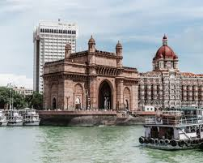
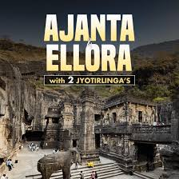
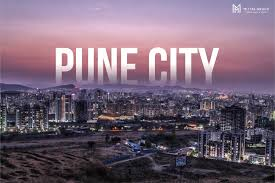
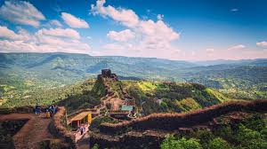
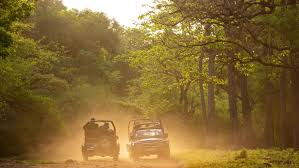

Mumbai

The state capital and the financial/entertainment hub of India. Key attractions include the Gateway of India, Marine Drive, Chhatrapati Shivaji Maharaj Terminus (UNESCO Site), and the vibrant Bollywood film industry.
Ajanta and Ellora Caves

Two separate UNESCO World Heritage Sites. Ajanta (30 rock-cut Buddhist cave monuments) and Ellora (Hindu, Buddhist, and Jain cave temples) are renowned for their stunning sculptures and frescoes.
Pune

Known as the 'Oxford of the East', it's a major educational and cultural centre, featuring historical sites like the Shaniwar Wada (a grand fortified palace) and a pleasant climate.
Mahabaleshwar

A popular hill station in the Western Ghats, famous for its strawberry farms, scenic viewpoints (like Arthur's Seat), and the ancient Mahabaleshwar Temple.
Tadoba-Andhari Tiger Reserve

A popular and well-managed tiger reserve known for its high probability of tiger sightings, offering a dense forest experience for wildlife enthusiasts.